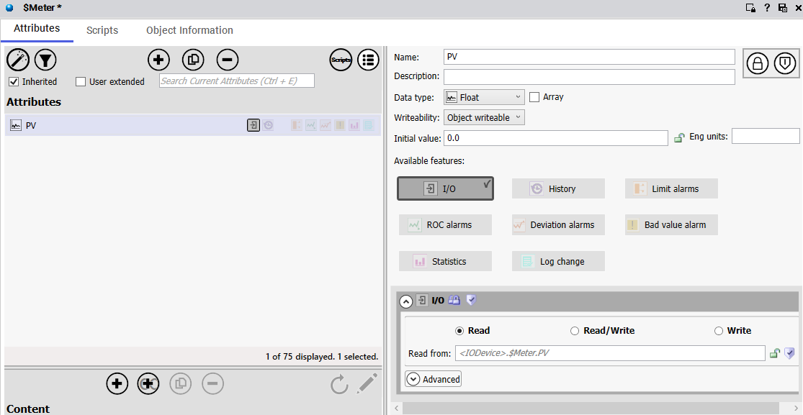
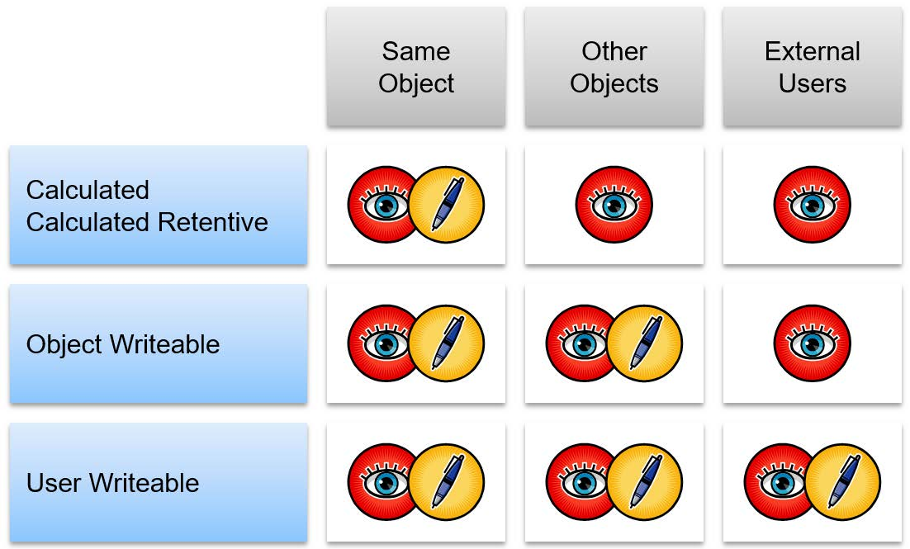

Source: AVEVA Application Server 2023 Training Manual, Module 4, Sections 1-2 (pages 4-3 to 4-16)
Understanding the core building blocks of an Application Server project — objects, their attributes, and how they model real-world equipment.
Reference: Module 4, Section 1 (pages 4-3 to 4-8)
An Application Object is a self-contained entity in the Galaxy that represents something in the real world — a motor, a valve, a sensor, a controller, or an entire unit operation. Each object has:
One of the most powerful features of Application Server is its nested object model. Objects can contain other objects, creating a hierarchy that mirrors your plant's physical structure:
| Level | Example | Description |
|---|---|---|
| Galaxy | MyPlant_Galaxy |
The top-level container for everything |
| Area | Water_Treatment |
Logical grouping of related equipment |
| Unit | Pump_Station_01 |
A specific functional unit in the plant |
| Equipment | Meter_01 |
An individual piece of equipment with I/O points |
There are two distinct kinds of objects in the Galaxy:
| Object Type | Purpose | When to Use |
|---|---|---|
| Templates | Reusable definitions (like class definitions in programming) | Created once, instantiated many times |
| Instances | Actual working objects (like objects created from a class) | Created from templates, deployed to run |
Reference: Module 4, Section 2 (pages 4-8 to 4-16)
To see an object's attributes, right-click the object in the Galaxy Editor and select Edit. This opens the Object Editor, which has an Attributes tab showing all available attributes for that object type.

Each attribute in the list has several properties that control how it behaves:
| Property | Description | Example from $Meter |
|---|---|---|
| Name | The identifier for this attribute | PV |
| Data Type | What kind of data it holds (Float, Integer, Boolean, String, etc.) | Float |
| Writeability | Whether the value can be changed at runtime | Object writeable |
| Initial Value | The default value when the object deploys | 0.0 |
| Source | Where the value comes from (I/O device, derived, etc.) | <IODevice>.$Meter.PV |
The most critical attribute configuration is I/O binding — telling an attribute where to get its value from in the real world. In the Object Editor, you can configure I/O auto-assignment:

The Read from field specifies the I/O address. The syntax follows the pattern:
<IODevice>.$Meter.PV
| Part | Meaning |
|---|---|
<IODevice> | The name of the communication driver object |
.$Meter | The device or register group on that driver |
.PV | The specific register or point within that device |
The Attributes tab typically organizes attributes into logical groups:
| Category | Purpose | Example Attributes |
|---|---|---|
| General / Core | Basic object properties | PV, SP (setpoint), Mode, Status |
| History | Historian data logging configuration | Historical Logging, Logging Interval |
| Limit Alarms | High/low alarm thresholds | HiHi, Hi, Lo, LoLo alarm limits |
| ROC Alarms | Rate-of-change alarm settings | ROC Limit, ROC Time |
Attributes can have different writeability levels:
| Writeability | Meaning |
|---|---|
| Object writeable | The value can be changed by users or scripts at runtime |
| Object read-only | The value is set by the system and cannot be manually changed |
| Derived | The value is calculated from other attributes or expressions |
The $Meter object shown has 75 total attributes. This is typical for equipment objects — they have many configuration options to cover different use cases. Not all attributes will be used in every deployment, but they are all available if needed.
1. What is the fundamental difference between a template and an instance in the Galaxy?
A template is a reusable definition — like a class in programming. An instance is a working object created from that template. Changes to templates propagate to all instances, but changes to individual instances do not affect the template or other instances.
2. In the $Meter object, what data type is the PV attribute?
Float — meaning it can hold decimal/floating-point values, which is appropriate for a process variable like flow rate, temperature, or pressure.
3. What does the I/O source <IODevice>.$Meter.PV represent?
This is the path to read the PV value from an external I/O device. <IODevice> is the communication driver object name, $Meter is the device or register group, and PV is the specific register or point being read.
4. Why might an attribute be set to "Object read-only"?
An attribute is read-only when its value is controlled by the system, derived from other values, or read from an external I/O source. Making it read-only prevents users or scripts from accidentally overwriting a value that should only come from a specific source.
5. What are the three alarm categories visible in the $Meter Attributes tab, and what are their default states?
The three alarm categories are History, Limit alarms, and ROC alarms. All three are disabled by default — you must explicitly enable and configure them for each object as needed.